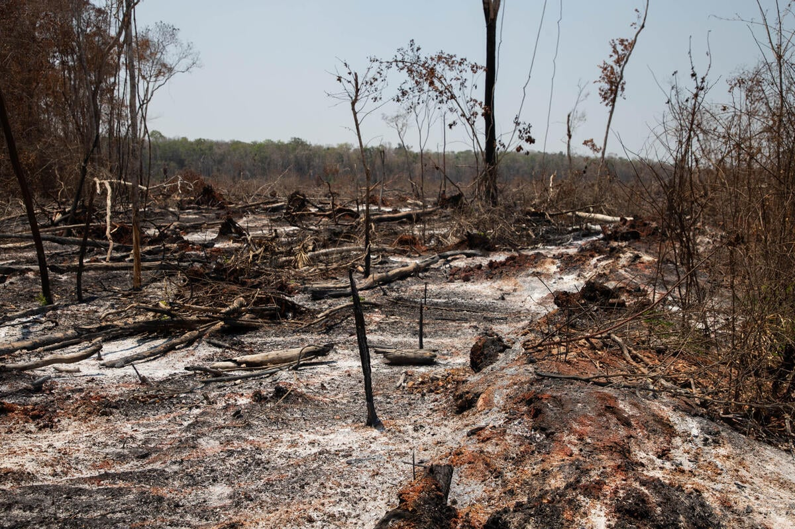

Agricultura y ganadería
La expansión de cultivos y zonas destinadas a la ganadería puede requerir la eliminación de grandes cantidades de árboles para aprovechar el terreno.
¿Porque sucede esto?
La deforestación puede producirse por diferentes actividades. En muchos casos, los bosques son reemplazados para utilizar el terreno con otros fines.

La expansión de cultivos y zonas destinadas a la ganadería puede requerir la eliminación de grandes cantidades de árboles para aprovechar el terreno.
La extracción de madera para fabricar muebles, papel y otros productos también puede contribuir a la pérdida de bosques cuando no se realiza de manera sostenible.
Los incendios pueden destruir grandes extensiones de vegetación. Algunos ocurren por causas naturales, mientras que otros son provocados por actividades humanas.